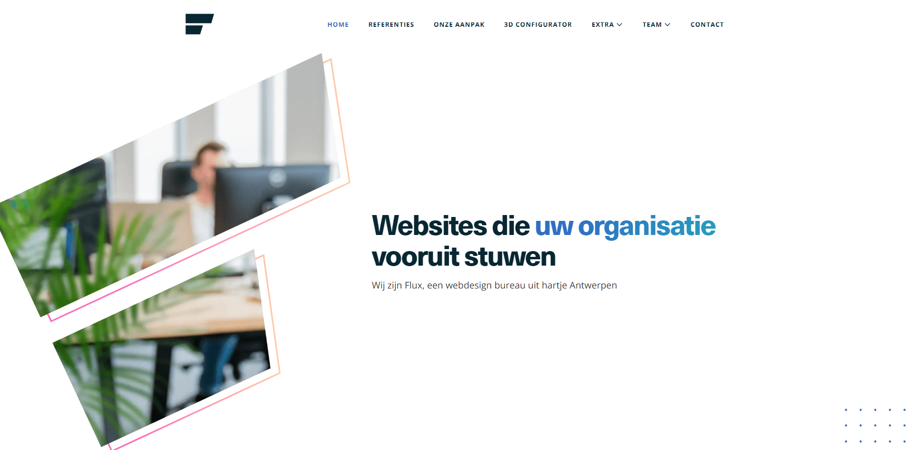
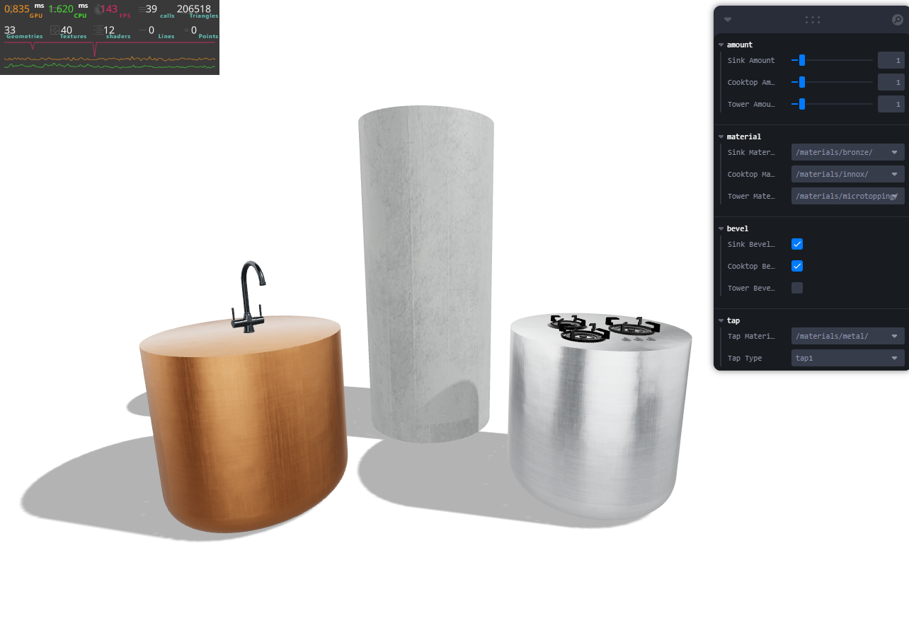

Hallo allemaal! Ik ben super enthousiast om mijn ervaringen te delen over mijn eerste twee weken bij Flux, een digital agency gevestigd in het hartje Antwerpen. Mijn stage draait hier helemaal om het werken met React-Three-Fiber en de limieten op te zoeken van 3D op het web. Het is een unieke kans waar ik enorm dankbaar voor ben.
De eerste dagen van mijn stage vlogen voorbij terwijl ik me verdiepte in videocursussen van Bruno Simon over Three.js, React en natuurlijk React-Three-Fiber. Normaal gesproken zou ik hier toch een dikke week voor krijgen, maar ik heb het op enkele dagen afgerond. Het was geweldig om nieuwe tips en trucs te ontdekken, zoals performance optimalisaties en zelfs een handige functie in Blender die ik nog niet kende.
Als eerste opdracht kreeg ik de kans om te kiezen tussen het uitwerken van een digitale tweeling van een robotarm of het leggen van de basis voor een 3D-configurator voor een start-up die luxe keukens produceert, bestaande uit drie modules. Mijn interesse ging vooral uit naar de keukens, omdat ik wist dat ik dan meer met Blender kon experimenteren en meer artistiek te werk kon gaan. Bovendien leek de digitale tweeling van de robotarm me te veel gericht op wiskunde, iets waar ik niet zo van hou.
Ik begon met het maken van renders in Blender voor een omgeving waar de keuken na configuratie zou worden geplaatst. Met de feedback van Robbe, mijn stagebuddy, evolueerde dit van een eenvoudige scène tot een resultaat waar ik trots op kon zijn. Na de feedback en goedkeuring van de CEO kon ik beginnen met de configurator.
(de cylinders op de afbeedling zijn de keuken modules)

Dit project is volledig ontwikkeld in React-Three-Fiber. Ik begon met het creëren van een basis scène met enkele cilinders als tijdelijke placeholders, die goed pasten bij de cilindervormige keukeneilanden. Op basis van feedback van Robbe begon ik te werken met een data.json-bestand om gegevens uit een API te simuleren. Hierdoor werd de app direct zeer flexibel en dynamisch. Stap voor stap voegde ik meer functies toe, zoals het aanpassen van de hoeveelheid eilanden, het wijzigen van materialen, en het kiezen tussen een rechte of afgeronde onderkant (voor de afronding heb ik eerst veel voorbereidingen getroffen in Blender). Vervolgens kon men een kraan selecteren voor het spoelbakeiland en ook hier het materiaal van veranderen. Uiteindelijk heb ik de materialen verbeterd om ze extra realistisch te maken en heb ik een Debug UI toegevoegd, zodat het tijdens de ontwikkelingsfase eenvoudig aan te passen en te testen was.
Ik heb momenteel al geleerd dat je app of website van in het begin dynamisch maken aan de hand van bijvoorbeeld JSON echt een meerwaarde is. Ik moet bijvoorbeeld nooit een nieuw materiaal in de code toevoegen, maar enkel de naam van het materiaal in de data.json zetten samen met de path er naar toe.
Ik heb ook geleerd dat ik echt wel soms iemand nodig heb die even snel mijn code bekijkt, want ik maak soms echt syntaxisfouten of kleine denkfouten, waardoor iets niet werkt of lijkt te werken. Ik heb bijvoorbeeld een half uur vastgezeten op een bestandspad dat verkeerd was, terwijl ik er zo zeker van was dat het juist was. Hetzelfde gold voor een kopie van een object dat niet in mijn scène wilde laden. Ik was er heel zeker van dat de objecten niet gewoon in elkaar zaten, waardoor je er maar één kon zien, maar ze bleken wel in elkaar te zitten omdat ik een positie meegaf in een eigenschap die niet werd gebruikt in het component.
Ik ben in ieder geval blij dat ik fantastische collega's heb die me te hulp schieten, zelfs bij stomme foutjes.